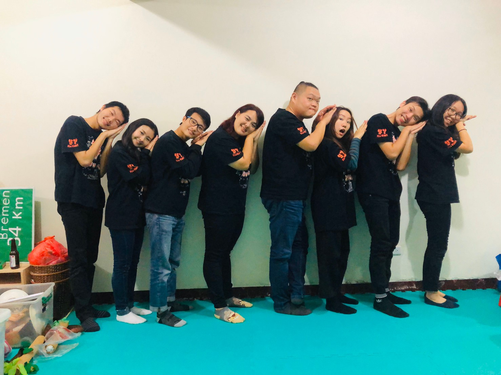
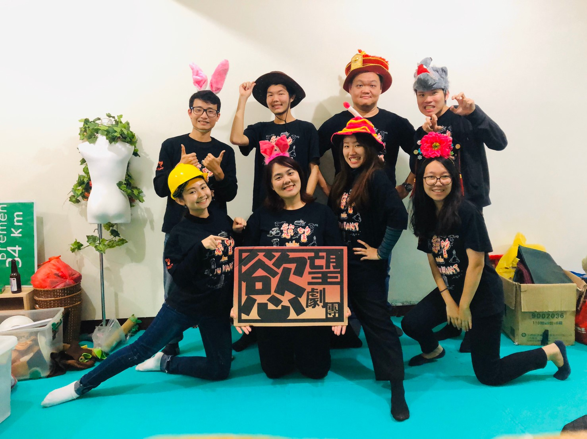

首頁
Home
最新消息
News
慾望成員
Team
慾望作品
Works
聯絡慾望
contact
慾望劇團
You Want Troupe


誕生於基隆，於2004年成立。我們致力推廣基隆戲劇藝文，於兒童、青少年、社會大眾這三大年齡層皆有深耕；並不斷提升。
我們擅長挖掘在地故事並改編成戲劇演出，也時常著力於作品與在地的連結，利用在地特色、文化等，融入我們的表演；例如近兩年來的年度大戲《雨信委託行》《鐵路邊的紅花》皆是在地題材改編；而每年我們也固定有兒童劇、小型環境劇場演出，皆以基隆環境、文化、人文議題等進行編創。
我們相信「戲劇能拉近人與人之間的距離」，並將「傳遞愛與感動」作為我們的中心理念；我們渴望將這份心情感染給更多人，而未來的目標仍是深耕基隆，並向外拓展。近年作品多以在地故事為題材，期望未來能將透過戲劇影響更多人，並積極促成跨域合作，培養劇團多元樣貌。
慾望年表
2004
● 慾望劇團成立
2008
● 年度製作《惡戲》演出
2009
● 年度製作《龍門客棧》演出
2010
● 年度製作《他不是怪物他是我同學》演出
2011
● 首度入選基隆市傑出演藝團隊
● 首次進行基隆國高中校園巡演，演出戲碼《活命》談及生命教育
因為有了這一年邁出劇場，進入校園接觸學生；在多年以後回顧當時才真正體悟「戲劇雙向交流」的意義，進而確立慾望劇團的核心理念。
● 黃品文接任第三代團長
2012
● 首次獲得文化部媒合演藝團隊進駐演藝場所合作計畫
● 舉辦【東北角頭藝術節】為青劇節之前身
2013
2015
● 年度製作《他不是怪物他是我同學》演出
遠赴澳洲的品文走出了舒適圈，想去打工度假體驗不同生活，身處異地卻心繫家鄉，反而堅定了經營劇團的信念，於是2015年回到基隆，帶著慾望重新站起來。
「休息是為了走更長的路，走出去是為了更好地站回來。」
2016
● 慾望的重大成長
慾望極為重要的一年，是奠定「在地挖掘」與「劇團提升」兩大重點的關鍵時間。
因駐團藝術總監 黃郁晴老師的帶領下，慾望開始每年針對不同方向進行提升課程，並於期間創作出代表作品《雨信委託行》而開啟了原創在地舞台劇的大門，並在同一年參與了兩齣重要合作作品：與阿普蛙工作室共同製作《中元怪奇博物館驚魂記》傳達中元核心精神「族群融合」；以及與讀演劇人、澳門夢劇社合作演出《當基隆撞上澳門》，探討基隆的現況與未來。此外這一年也首度製作兒童互動劇《野狼三兄弟與豬公主》，開啟了未來一年一齣兒童劇的頻度。多產的這一年是慾望極為重要、極大轉折的一年。
2017
● 慾望首次站上大舞台演藝廳售票演出代表作《雨信委託行》
在前一年《雨信委託行》小劇場版獲得廣大的好評後，慾望湧現出想讓更多人看見的決心，在經過二次田調、創作修改後完成了大舞台製作，是慾望一項重要的里程碑。
● 推出原創兒童劇《海底的守護神》
基隆與海洋緊密連結，以海洋保育為主軸製作而成的兒童劇，也同樣對慾望影響甚大，自此開始慾望所有演出及活動不再使用免洗餐具，並添購了環保餐具響應環保。
2018
● 慾望首次外縣市售票演出
《雨信委託行》持續的好口碑，讓慾望終於有機會走出基隆，到新竹縣演藝廳演出，延續感動的聲音。
● 跨團合作社區巡演
跨團合作演出增進團隊交流與提升，與同為在地傑出團隊的：基隆交響管樂團合作《布萊梅樂隊》經典音樂劇、綻放中東舞團合作《法老王的神奇魔毯》，並於基隆七大行政區巡演，跨域合作有嶄新挑戰，也有不同領域的成長。
2019
● 慾望在地系列第二號代表作《鐵路邊的紅花》誕生